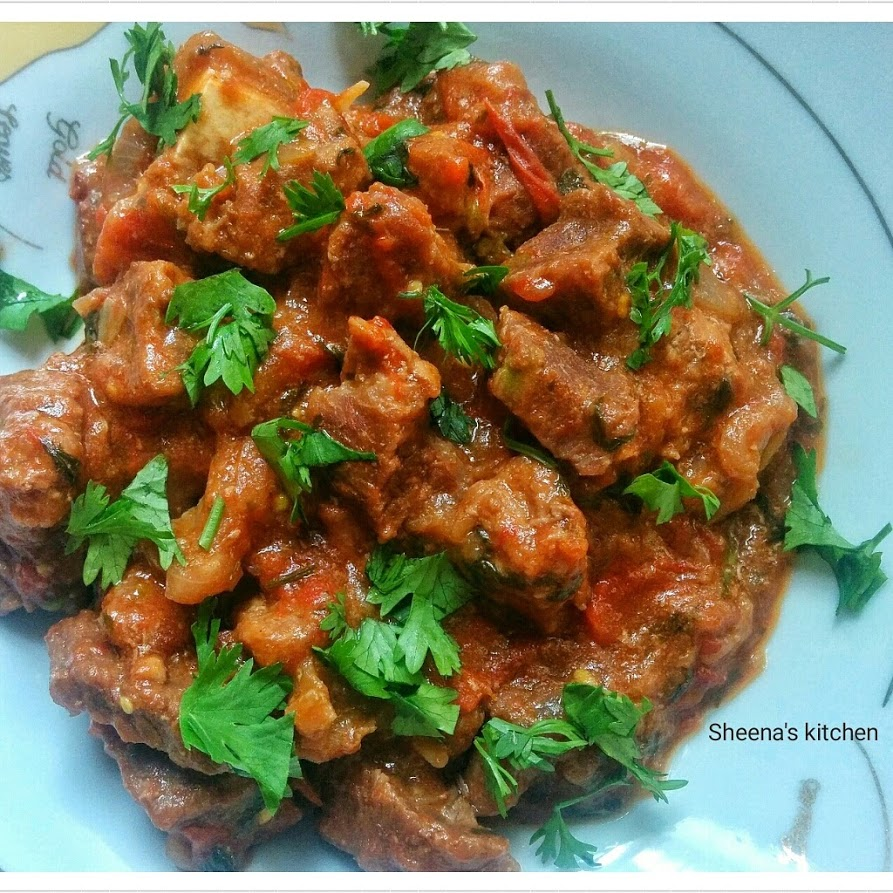

in a sufuria(sauce pan) combine meat,salt,ginger,garlic and water
Bring to a boil aand simmer on very low heat for about 40minutes-1 hr or until the meat is soft and most of the water has evaporated
Once the meat is soft and there is still some water, remove the water from the meat and set it aside.
In the same sufuria with the meat with no liquid, add some oil, add the onions,chili and fry until onions start to brown slightly
Add the tomatoes stir and fry on low heat sufuria covered for about 10 minutes or until tomatoes are soft, crushed and they have produced their own natural liquid.
Add the royco, and remaining seasoning, remaining broth liquid mix well and simmer on very low heat for about 20 minutes
The beef is ready to serve when most of the liquid has evaporated and or the whole beef mixture is nice and thick in texture.
Finish by adding the dhania and serve.
Final item should look like this

Best enjoyed with spinach, sukumawiki or cabbage with